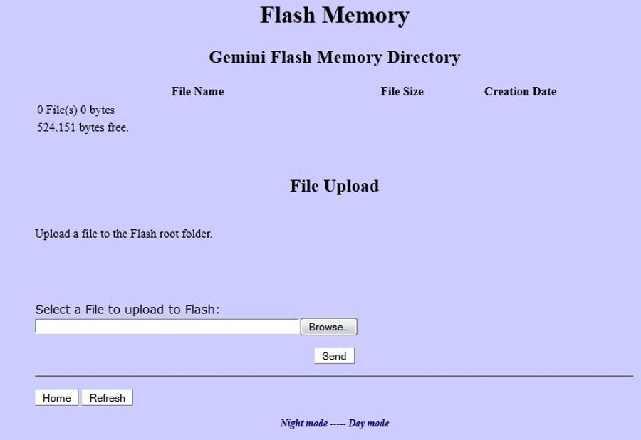

|  |
| The sole purpose of this menu is to upload the file to reprogram the ARM processor in the Gemini-2 |
|
| If your Gemini-2 is connected Via Ethernet, turned ON, and Responds to http://gemini/Flash.cgi then this link will open this page in the Gemini-2 web interface, after prompting for a log-in. |